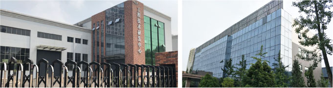
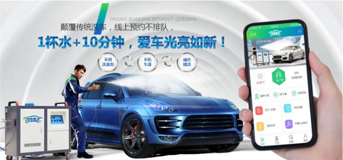
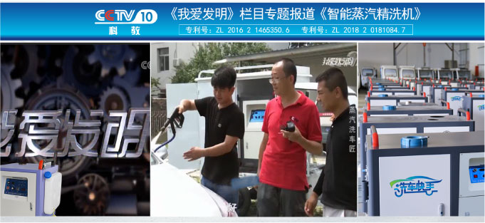

——洗车快手品牌营销策划纪实
中国汽车保有量持续飙升，预计2020年将突破2.5亿辆，巨大的汽车后市场给洗车带来了空前发展机遇，目前洗车行业市值已超300亿元，而国内仅有的20多万家洗车店，根本无法满足市场消费需求。
北京伟科盛世科技有限公司凭借敏锐的商业嗅觉，捕捉到这一巨大商机，整合行业优秀人才与优势资源，重磅推出「洗车快手」品牌，但毕竟做品牌是一个体系工程，究竟如何塑造“洗车”品牌，如何快速建立品牌竞争绝对优势，跻入洗车市场品牌阵营，并且最终赢得消费者？带着这些问题，北京伟科盛世科技有限公司与若邻广告展开了全面合作。
+ 机会洞察：洗车将进入蒸汽时代，洗车品类亟待升级。
在国家环保政策推行下，环保部门对洗车行业的用水与污水排放做出严格限制，传统洗车店纷纷转型，寻求更为节能环保的洗车模式，而蒸汽洗车符合国家政策要求，更能满足传统洗车业的转型需求。
+ 若邻团队和品牌方在深入研究市场和消费趋势后，通过若邻品牌高铁战略理论，用“智能蒸汽精洗 美容会所”重新定义市场。
明确方向之后，就需要趁热打铁跟进品类定位。我们将洗车快手定义为针对传统洗车弊端具有不排队、用水少、超干净、易操作的智能蒸汽精洗。而洗车快手作为智能蒸汽精洗市场的补缺者如何做到后来居上，就必须先发制人，侧翼进攻。所以我们需要以普洗的价格，一站式的精洗服务，用“智能蒸汽精洗美容会所”重新定义市场。
+ 抢占“1杯水+10分钟”核心利益，
构建品类内部的差异化竞争优势。
洗车快手以智能蒸汽精洗机为核心，业界首推流动洗车模式，辅以清洁与美容产品，实现1杯水+10分钟让汽车光亮如新的神奇效果，不仅为有车一族打造高品质爱车生活蓝本，更解决水资源，减少洗车污水排放，有效保护地球生态，快手洗车迅速成为洗车市场新霸主。若邻通过强化产品优势，使之快速与竞争对手之间形成差异化竞争优势。
+ 让产品成为营销载体，强势建立品牌视觉形象
产品自身就是最有价值的媒体，方寸之间信息如何整合、视觉元素的层次如何呈现，看似一场设计美学，其实就是一种精心的营销布局。洗车快手设计整体刚柔并济，统一又很多元，突出洗车快手外在的、可感知的环保价值。把消费者的眼球吸引过来，并明确建立产品与消费者之间的联系，完成消费者为产品服务买单的动作！
+1+N全新商业模式，打造优势可快速变现的轨道。
若邻针对消费群体定制1+N全新商业模式。凭借先进自研设备+智能服务平台+独创商业模式，颠覆传统洗车模式，用智能机器+清洁产品+美容产品的组合方式，对汽车进行全方位的深度清洁，用普洗的价格实现精洗的效果。不止精洗，更是一站式美容，不止是洗车，更创新生活清洗服务，手机下单，上门服务，清洗养护一站式。将互联网与实体经济结合，复合化渠道盈利，打破了传统洗车方法的局限，将高效与智能紧紧结合在一起，实现超高坪效终端，快速扩大市场占额。
若邻品牌高铁战略策划，借助行业趋势，针对消费者关注的痛点，通过全新商业模式从根本上提升商业变现的速度，一举解决品牌大规模扩张与连锁管控难题，用实力让企业达到亿量级快速倍增。